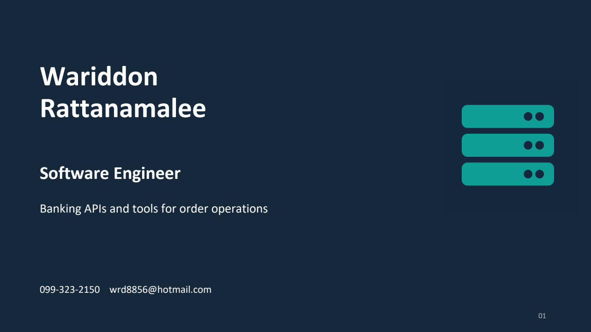

Interview presentation
Wariddon Rattanamalee · Software Engineer

- Why it mattered
- Staff use System and Audit in the same workflow. Both apps needed to recognize who was signed in.
- What I changed
- I updated the session checks and backend requests used when staff sign in or sign out.
- What I tested
- I checked expired sessions, sign-in redirects, and the return path between the two apps.
Unable to load this slide. Open the PDF presentation.
1 / 17 Introduction
← → to change slides · F to present · Esc to exit · Swipe to change slides